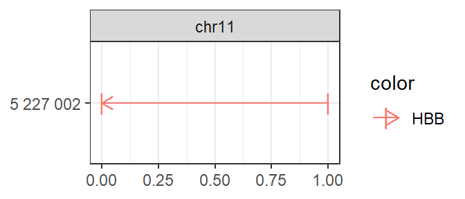
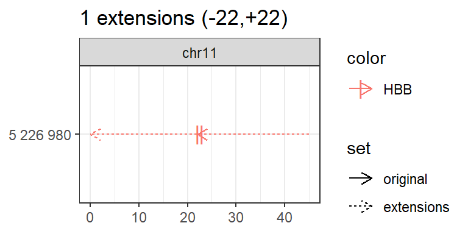
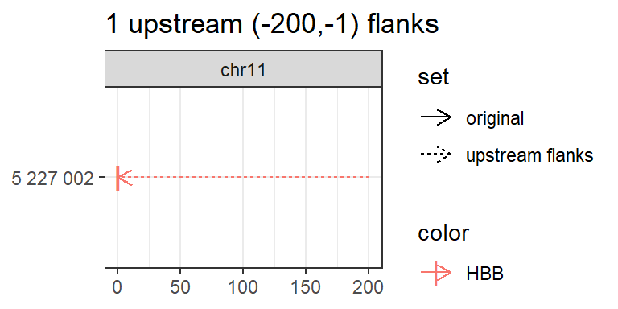
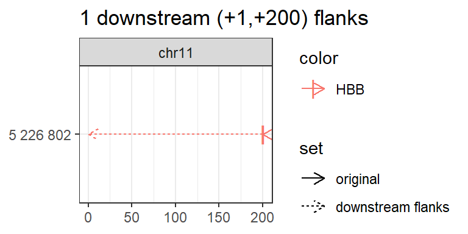
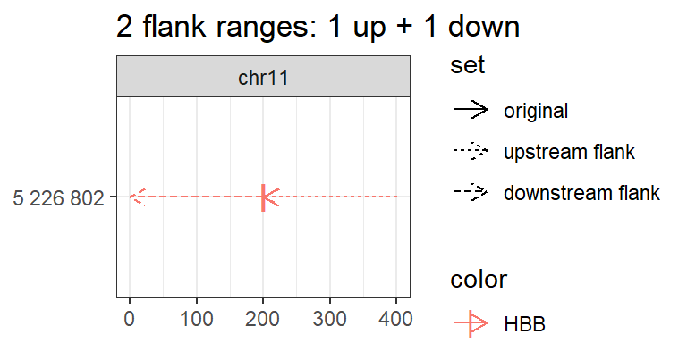
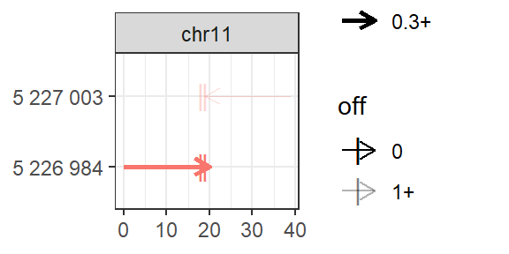
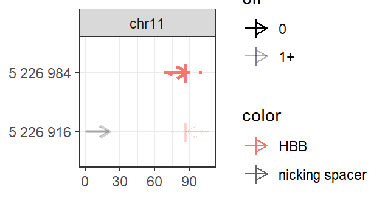
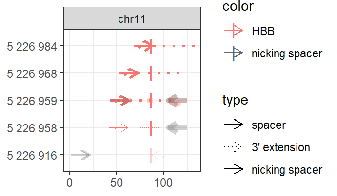

Using multicrispr for gRNA design
Aditya M Bhagwat
2020-09-06
grna_design.RmdBackground
Crispr/Cas9 and Prime Editing
Crispr/Cas9 is a prokaryotic immune system turned into a genome engineering tool, with a Cas9/gRNA complex at the heart of its functioning. The gRNA (guide RNA) contains a 20 nucleotide (proto)spacer which guides the complex to a genomic locus with identical sequence, but only when followed by an NGG PAM (protospacer adjacent motif (see Figure 1A). The Cas9 enzyme performs some effector action at that locus: wildtype Cas9 cuts both strands after spacer nucleotide 17, Cas9Nickase cuts only a single strand (two variants exist, cutting respectively each of the strands), while catalytically dead dCas9, fused to some effector domain (KRAB, VPR, APEX) performs some alternative action (e.g. KRAB represses, VPR activates, APEX biotinylates).
Prime Editing (Anzalone et al., 2019) extends this further, by coupling Cas9 to a Reverse Transcriptase (RT). As shown in Figure 1, the guide RNA is extended with a 3’ extension that contains primer binding site (binding a complementary DNA region that acts as a primer for reverse transcription) and reverse transcription template (the template used for reverse transcription). The spacer still acts as targeting agent, guiding the Cas9/RT complex to targeted genomic locus.

gRNAs for Crispr/Cas9 (A) and Prime Editing
Guide RNA design
Guide RNA design involves finding good guide RNAs to hit the targets of interest. Plasmids with guide RNA scaffolds, ready for cloning desired spacers into, can be readily ordered from AddGene. The actual task, therefore, boils down to finding good spacers for the targets of interest. For prime editing, it additionally involves finding appropriate primer binding site and reverse transcription template to edit the target site of interest.
A good spacer needs to fulfill two requirements.
-
Minimal off-target (mis)matches, so that only intended targets are hit.
- Crispr gRNAs can hit exact (with identical and alternate NGG pam), as well as (up-to 2) mismatch offtargets.
- Prime Editing is much more specific, hitting only exact offtargets.
Maximal on-target efficiency. Over the years, several sequence-to-efficiency prediction models have been developed, of which the Doench 2016 score has currently become the community standard. The score is not perfect, and examples can be found where the prediction and the actual outcome differ. Yet, to-date it is the best heuristic to predict on-target efficiency, worth making use of.
Multicrispr
Multicrispr was developed to make guide RNA design easier. As shown below, it contains functions to define and transform targets, find spacers, compute/add offtarget counts and efficiency scores (Doench 2016), and finally return all of this as a GRanges object.

Install
Installing multicrispr is simple:
# From BioC install.packages("BiocManager") BiocManager::install(version='devel') BiocManager::install("multicrispr") # From gitlab: url <- 'https://gitlab.gwdg.de/loosolab/software/multicrispr.git' remotes::install_git(url, repos = BiocManager::repositories())
Doench et al. (2016) ’s python package azimuth for on-target efficiency prediction using their method can be easily installed and activated using reticulate:
# Install once # reticulate::conda_create('azienv', 'python=2.7') # reticulate::conda_install('azienv', 'azimuth', pip = TRUE) # reticulate::conda_install('azienv', 'scikit-learn==0.17.1', pip = TRUE) # Then activate reticulate::use_condaenv('azienv')
Bowtie-indexed genomes for quick offtarget analysis can be installed using index_genome. For the two genomes used in the examples, mm10 and hg38, the functions downloads pre-build indexes from our data server, allowing a quick exploration (set download=FALSE to build index anew):
index_genome(BSgenome.Mmusculus.UCSC.mm10::BSgenome.Mmusculus.UCSC.mm10) index_genome(BSgenome.Hsapiens.UCSC.hg38::BSgenome.Hsapiens.UCSC.hg38 )
Define targets

bed_to_granges converts a (0-based) BED coordinate file into a (1-based) GRanges.
An example is loading the 1974 binding sites of the transcription factor SRF:
require(magrittr) ## Lade nötiges Paket: magrittr require(multicrispr) ## Lade nötiges Paket: multicrispr bedfile <- system.file('extdata/SRF.bed', package = 'multicrispr') tfbs0 <- bed_to_granges(bedfile, genome = 'mm10') ## Read SRF.bed into GRanges ## ## Attache Paket: 'BiocGenerics' ## The following objects are masked from 'package:parallel': ## ## clusterApply, clusterApplyLB, clusterCall, clusterEvalQ, ## clusterExport, clusterMap, parApply, parCapply, parLapply, ## parLapplyLB, parRapply, parSapply, parSapplyLB ## The following objects are masked from 'package:stats': ## ## IQR, mad, sd, var, xtabs ## The following objects are masked from 'package:base': ## ## anyDuplicated, append, as.data.frame, basename, cbind, colnames, ## dirname, do.call, duplicated, eval, evalq, Filter, Find, get, grep, ## grepl, intersect, is.unsorted, lapply, Map, mapply, match, mget, ## order, paste, pmax, pmax.int, pmin, pmin.int, Position, rank, ## rbind, Reduce, rownames, sapply, setdiff, sort, table, tapply, ## union, unique, unsplit, which, which.max, which.min ## ## Attache Paket: 'S4Vectors' ## The following object is masked from 'package:base': ## ## expand.grid ## ## Attache Paket: 'IRanges' ## The following object is masked from 'package:grDevices': ## ## windows ## ## Attache Paket: 'Biostrings' ## The following object is masked from 'package:base': ## ## strsplit ## 1974 ranges on 21 chromosomes

genes_to_granges and genefile_to_granges convert entrez/ensembl gene identifiers into GRanges using txdb gene models. An example that loads of a small subset of the 1974 SRF binding sites:
require(multicrispr) entrezfile <- system.file('extdata/SRF.entrez', package = 'multicrispr') txdb <- TxDb.Mmusculus.UCSC.mm10.knownGene::TxDb.Mmusculus.UCSC.mm10.knownGene sometfbs0 <- genefile_to_granges(entrezfile, txdb, complement = TRUE) ## 66 genes were dropped because they have exons located on both strands ## of the same reference sequence or on more than one reference sequence, ## so cannot be represented by a single genomic range. ## Use 'single.strand.genes.only=FALSE' to get all the genes in a ## GRangesList object, or use suppressMessages() to suppress this message. ## Convert 10 genes to 10 GRanges ## Retain 20 unique target ranges after adding inverse strands

char_to_granges uses a 1-based coordinate vector to specify the GRanges.
It can be used to define four prime editing sites mentioned by Anzalone et al. (2019):
# char_to_granges: Anzalone et al. (2019) prime editing targets bsgenome <- BSgenome.Hsapiens.UCSC.hg38::BSgenome.Hsapiens.UCSC.hg38 pe0 <- char_to_granges(c(HBB = 'chr11:5227002:-'), bsgenome) plot_intervals(pe0)

Transform targets

As a second step, the original targets may require transformation. The functions extend, up_flank (upstream flanks), down_flank (downstream flanks), and double_flank (double flanks) can be used to update the target ranges as required.


# Down flank invisible(down_flank( targets, 1, 200, plot = TRUE))

# Double flank invisible(double_flank(targets, -200, -1, +1, +200, plot = TRUE)) ## 2 flank ranges: 1 up + 1 down

Find spacers, count off-targets, score on-targets, find nickspacers

The next step is to find N20 spacers followed by NGG pam sites. This can be done with find_spacers, after extending target range(s) to prime editing neighbourhood(s). This function also counts off-targets and scores on-targets.
bsgenome <- BSgenome.Hsapiens.UCSC.hg38::BSgenome.Hsapiens.UCSC.hg38 neighbourhood <- extend_for_pe(targets, bsgenome) spacers <- find_spacers(neighbourhood, bsgenome, complement = FALSE, mismatches = 0) ## Find spacers in 2 targets ## Found 2 spacers ## Count offtargets with max 0 mismatches using bowtie ## Count genome (mis)matches ## Expand iupac ambiguities in pam ## Write reads to ~/multicrisprout/spacers.fa ## Map reads: ~/multicrisprout/spacers/spacers_to_BSgenome.Hsapiens.UCSC.hg38.txt ## Load results ## Read 12 hits with max 1 mismatch(es) ## Retain 3 after removing NGG 'N' mismatches (avoid double counting expanded pams) ## Retain 3 after removing NGG 'G1' mismatches(except for NGG -> NAG, which is allowed) ## Retain 3 after removing NGG 'G2' mismatches ## Retain 3 after removing more than 0 mismatches ## Count matches ## Count off-targets ## 1 are off0 free ## Score ontargets ## Add (4-23-3) contextseqs ## Score contextseqs with Doench2014

For prime editing, however, it is better to use find_primespacers, which performs target to neighbourhood extension implicitly, and also finds 3’ extensions and nickspacers (Fig 1) to returned spacer GRanges.
spacers <- find_primespacers(targets, bsgenome=bsgenome) ## Find primespacers for 1 targets ## Found 2 primespacers ## Count offtargets with max 0 mismatches using bowtie ## Count genome (mis)matches ## Expand iupac ambiguities in pam ## Write reads to ~/multicrisprout/spacers.fa ## Map reads: ~/multicrisprout/spacers/spacers_to_BSgenome.Hsapiens.UCSC.hg38.txt ## Load results ## Read 12 hits with max 1 mismatch(es) ## Retain 3 after removing NGG 'N' mismatches (avoid double counting expanded pams) ## Retain 3 after removing NGG 'G1' mismatches(except for NGG -> NAG, which is allowed) ## Retain 3 after removing NGG 'G2' mismatches ## Retain 3 after removing more than 0 mismatches ## Count matches ## Count off-targets ## 1 are off0 free ## Score ontargets ## Add (4-23-3) contextseqs ## Score contextseqs with Doench2014 ## Find nickspacers ## Find spacers in 2 targets ## Found 2 spacers ## Count offtargets with max 2 mismatches using bowtie ## Count genome (mis)matches ## Expand iupac ambiguities in pam ## Write reads to ~/multicrisprout/spacers.fa ## Map reads: ~/multicrisprout/spacers/spacers_to_BSgenome.Hsapiens.UCSC.hg38.txt ## Load results ## Read 16 hits with max 2 mismatch(es) ## Retain 4 after removing NGG 'N' mismatches (avoid double counting expanded pams) ## Retain 4 after removing NGG 'G1' mismatches(except for NGG -> NAG, which is allowed) ## Retain 4 after removing NGG 'G2' mismatches ## Retain 4 after removing more than 2 mismatches ## Count matches ## Count off-targets ## 0 are off0 free ## 2 are off1 free ## 2 are off2 free ## Filter for best offtarget counts ## Retain 2 with best off0 counts per pename ## Retain 2 with best off1 counts per pename ## Retain 2 with best off2 counts per pename ## Score ontargets ## Add (4-23-3) contextseqs ## Score contextseqs with Doench2014 ## Warning: Removed 4 rows containing missing values (geom_point). ## Warning: Removed 4 rows containing missing values (geom_point).

This finds prime editing sites that follow Anzalone et al. (2019)’s recommended default settings: a 13-nucleotide primer and a 16-nucleotide reverse transcription template. These settings can be easily altered (e.g. Anzalone et al. report success with reverse transcription templates of up to 48 nucleotides) by.
spacers <- find_primespacers(targets, bsgenome=bsgenome, nrt = 48) ## Find primespacers for 1 targets ## Found 6 primespacers ## Count offtargets with max 0 mismatches using bowtie ## Count genome (mis)matches ## Expand iupac ambiguities in pam ## Write reads to ~/multicrisprout/spacers.fa ## Map reads: ~/multicrisprout/spacers/spacers_to_BSgenome.Hsapiens.UCSC.hg38.txt ## Load results ## Read 36 hits with max 1 mismatch(es) ## Retain 12 after removing NGG 'N' mismatches (avoid double counting expanded pams) ## Retain 12 after removing NGG 'G1' mismatches(except for NGG -> NAG, which is allowed) ## Retain 12 after removing NGG 'G2' mismatches ## Retain 8 after removing more than 0 mismatches ## Count matches ## Count off-targets ## 4 are off0 free ## Score ontargets ## Add (4-23-3) contextseqs ## Score contextseqs with Doench2014 ## Find nickspacers ## Find spacers in 6 targets ## Found 7 spacers ## Count offtargets with max 2 mismatches using bowtie ## Count genome (mis)matches ## Expand iupac ambiguities in pam ## Write reads to ~/multicrisprout/spacers.fa ## Map reads: ~/multicrisprout/spacers/spacers_to_BSgenome.Hsapiens.UCSC.hg38.txt ## Load results ## Read 51 hits with max 2 mismatch(es) ## Retain 15 after removing NGG 'N' mismatches (avoid double counting expanded pams) ## Retain 15 after removing NGG 'G1' mismatches(except for NGG -> NAG, which is allowed) ## Retain 13 after removing NGG 'G2' mismatches ## Retain 13 after removing more than 2 mismatches ## Count matches ## Count off-targets ## 2 are off0 free ## 5 are off1 free ## 6 are off2 free ## Filter for best offtarget counts ## Retain 6 with best off0 counts per pename ## Retain 5 with best off1 counts per pename ## Retain 5 with best off2 counts per pename ## Score ontargets ## Add (4-23-3) contextseqs ## Score contextseqs with Doench2014 ## Warning: Removed 11 rows containing missing values (geom_point). ## Warning: Removed 11 rows containing missing values (geom_point).

Return spacer GRanges
spacers ## GRanges object with 6 ranges and 21 metadata columns: ## seqnames ranges strand | targetname targetstart targetend ## <Rle> <IRanges> <Rle> | <character> <integer> <integer> ## HBB_1 chr11 5226958-5226977 + | HBB 5227002 5227002 ## HBB_2 chr11 5226959-5226978 + | HBB 5227002 5227002 ## HBB_3 chr11 5226968-5226987 + | HBB 5227002 5227002 ## HBB_4 chr11 5227003-5227022 - | HBB 5227002 5227002 ## HBB_5 chr11 5226984-5227003 + | HBB 5227002 5227002 ## HBB_6 chr11 5227021-5227040 - | HBB 5227002 5227002 ## crisprname crisprspacer crisprpam crisprprimer ## <character> <character> <character> <character> ## HBB_1 HBB_1 CCACGTTCACCTTGCCCCAC AGG GTTCACCTTGCCC ## HBB_2 HBB_2 CACGTTCACCTTGCCCCACA GGG TTCACCTTGCCCC ## HBB_3 HBB_3 CTTGCCCCACAGGGCAGTAA CGG CCCCACAGGGCAG ## HBB_4 HBB_4 CATGGTGCATCTGACTCCTG AGG GTGCATCTGACTC ## HBB_5 HBB_5 GTAACGGCAGACTTCTCCTC AGG CGGCAGACTTCTC ## HBB_6 HBB_6 GCAACCTCAAACAGACACCA TGG CCTCAAACAGACA ## crisprtranscript ## <character> ## HBB_1 CACAGGGCAGTAACGGCAGACTTCTCCTCAGGAGTCAGATGCACCATG ## HBB_2 ACAGGGCAGTAACGGCAGACTTCTCCTCAGGAGTCAGATGCACCATGG ## HBB_3 TAACGGCAGACTTCTCCTCAGGAGTCAGATGCACCATGGTGTCTGTTT ## HBB_4 CTGAGGAGAAGTCTGCCGTTACTGCCCTGTGGGGCAAGGTGAACGTGG ## HBB_5 CTCAGGAGTCAGATGCACCATGGTGTCTGTTTGAGGTTGCTAGTGAAC ## HBB_6 CCATGGTGCATCTGACTCCTGAGGAGAAGTCTGCCGTTACTGCCCTGT ## crisprextension ## <character> ## HBB_1 CATGGTGCATCTGACTCCTGAGGAGAAGTCTGCCGTTACTGCCCTGTGGGGCAAGGTGAAC ## HBB_2 CCATGGTGCATCTGACTCCTGAGGAGAAGTCTGCCGTTACTGCCCTGTGGGGCAAGGTGAA ## HBB_3 AAACAGACACCATGGTGCATCTGACTCCTGAGGAGAAGTCTGCCGTTACTGCCCTGTGGGG ## HBB_4 CCACGTTCACCTTGCCCCACAGGGCAGTAACGGCAGACTTCTCCTCAGGAGTCAGATGCAC ## HBB_5 GTTCACTAGCAACCTCAAACAGACACCATGGTGCATCTGACTCCTGAGGAGAAGTCTGCCG ## HBB_6 ACAGGGCAGTAACGGCAGACTTCTCCTCAGGAGTCAGATGCACCATGGTGTCTGTTTGAGG ## crisprextrange off off0 Doench2014 ## <character> <numeric> <numeric> <numeric> ## HBB_1 chr11:5226962-5227022:- 0 0 0.0244198 ## HBB_2 chr11:5226963-5227023:- 0 0 0.3229083 ## HBB_3 chr11:5226972-5227032:- 0 0 0.3044047 ## HBB_4 chr11:5226958-5227018:+ 1 1 0.1311142 ## HBB_5 chr11:5226988-5227048:- 0 0 0.4139806 ## HBB_6 chr11:5226976-5227036:+ 1 1 0.7809699 ## nickrange ## <character> ## HBB_1 chr11:5227021-5227040:- ## HBB_2 chr11:5227021-5227040:- ## HBB_3 <NA> ## HBB_4 chr11:5226916-5226935:+;chr11:5226917-5226936:+ ## HBB_5 <NA> ## HBB_6 chr11:5226959-5226978:+ ## nickspacer nickpam nickoff ## <character> <character> <character> ## HBB_1 GCAACCTCAAACAGACACCA TGG 1 ## HBB_2 GCAACCTCAAACAGACACCA TGG 1 ## HBB_3 <NA> <NA> <NA> ## HBB_4 ACCTTGATACCAACCTGCCC;CCTTGATACCAACCTGCCCA AGG;GGG 1;1 ## HBB_5 <NA> <NA> <NA> ## HBB_6 CACGTTCACCTTGCCCCACA GGG 1 ## nickoff0 nickoff1 nickoff2 nickDoench2014 ## <character> <character> <character> <character> ## HBB_1 1 0 0 0.78 ## HBB_2 1 0 0 0.78 ## HBB_3 <NA> <NA> <NA> <NA> ## HBB_4 1;1 0;0 0;0 0.06;0.42 ## HBB_5 <NA> <NA> <NA> <NA> ## HBB_6 0 1 0 0.32 ## ------- ## seqinfo: 595 sequences (1 circular) from hg38 genome
References
Anzalone, A.V., Randolph, P.B., Davis, J.R. et al. Search-and-replace genome editing without double-strand breaks or donor DNA. Nature 576, 149–157 (2019). https://doi.org/10.1038/s41586-019-1711-4
Doench et al. (2016). Optimized sgRNA design to maximize activity and minimize off-target effects of CRISPR-Cas9. Nature Biotechnology, 34(7), doi:10.1038/nbt.3437